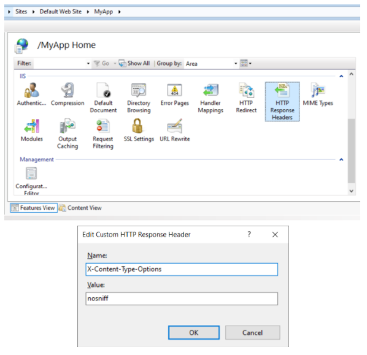

The following are recommendations to implement at the server level configuration in order to deploy in the most secure way your applications. Is important to review the article Hardening of GeneXus Systems and Deployments with GAM.
Regarding the use of a secure channel for communication between client and server, there are several elements to be taken into account by the infrastructure administrator, and that depends on the technologies used. Therefore, the following recommendations are general and some external references are provided as a guide on how to implement them. By complementing GAM, good practices can prevent problems such as the theft of misconfigured cookies or even credentials.
Avoid using unencrypted HTTP. From GeneXus, the Protocol specification property can be configured at the generation environment level. If the value Do not specify is assigned, either HTTP or HTTPS will be used depending on the configuration of the server on which the application is hosted, which makes it easier in test environments. The problem with this approach is that the production server is assumed to be correctly configured. Then we have the Secure (HTTPS:) value, which forces you to interact via HTTPS and have all the environments where the application is hosted correctly configured.
A restrictive policy not to use HTTP can be configured on each web server, with complementary measures such as enabling HTTP Strict Transport Security (HSTS) which is also useful for the next consideration regarding the use of HTTPS.
For more details, read:
Avoid a return to HTTP and insecure protocols
In some cases, the server configuration may intentionally or accidentally be switched from HTTPS to HTTP for certain URLs. With the “URL rewrite” functionality on the servers, it is possible to create redirects to the same resource you are trying to access but forcing the use of HTTPS instead of HTTP.
On the other hand, in encryption protocols, we usually find TLS (Transport Layer Security) or its predecessor SSL (Secure Sockets Layer) configured in its different versions. Today, supporting only TLS 1.2 and 1.3 in applications is recommended. Servers running on Windows (Internet Information Services) are configured at the operating system level, which can be done manually or with tools such as IIS Crypto. On servers like Apache, the change occurs at the service level by editing configuration files, for example, adding the following to the corresponding file:
SSLProtocol all -SSLv3 -TLSv1 -TLSv1.1
For more details, read:
In addition to selecting the right protocols, it is necessary to carefully select encryption suites. It is a combination of authentication, encryption, and integrity control algorithms supported by the protocols. There are various configurations, so you can follow different recommendations from recognized industry and security entities such as OWASP, or those recommended by application server vendors; for example, in the Apache documentation.
On Windows (Internet Information Services), the configuration is done at the operating system level, and it can be done manually or with tools such as IIS Crypto. On servers like Apache, the change occurs at the service level by editing configuration files, for example, adding the following to the corresponding file:
SSLCipherSuite ECDHE-ECDSA-AES256-GCM-SHA384:ECDHE-RSA-AES256-GCM-SHA384:ECDHE-ECDSA-CHACHA20-POLY1305:ECDHE-RSA-CHACHA20-POLY1305:ECDHE-ECDSA-AES128-GCM-SHA256:ECDHE-RSA-AES128-GCM-SHA256:ECDHE-ECDSA-AES256-SHA384:ECDHE-RSA-AES256-SHA384:ECDHE-ECDSA-AES128-SHA256:ECDHE-RSA-AES128-SHA256
For more details, read:
It is the developers' and administrators' responsibility to generate generic error pages (404, 403, 500, etc.) and configure them on the server, respectively, so as not to reveal information due to access control failures, internal GAM or GeneXus errors, etc. This is a frequently suggested practice because it doesn't indicate if a resource is inaccessible due to lack of permissions or because it doesn't exist. Also, if an internal error occurs, neither the trace of the error nor the technology are recorded. All these elements would provide information to a potential attacker.
If you are using GeneXus 16 Upgrade 11 or higher you can configure the Http Error Handlers property to associate different static HTML pages to specific error codes.
For prior versions you still can do such configurations; notice that every web server implementation has its own way of configuring when to return error pages. In IIS (Internet Information Services) it is possible to apply configurations from its administration graphic interface, although, in general, if you edit the web.config file directly it is usually more versatile and easier to find information about it. For other implementations like Apache, it is edited in a configuration file and it can be simpler to find functional examples since lines like the following are usually enough to return a specific page:
ErrorDocument 404 /errors/not_found.html
The version of the server to be configured must be taken into account, as there can be major differences in the configuration file between versions. For example, Apache Tomcat allows configuring the same handling of 404 as shown below in tomcat/conf/web.xml:
<error-page> <error-code>404</error-code> <location>/errors/not_found.html</location> </error-page>
However, in Tomcat 9, particular cases such as incorrectly formatted URLs are not covered in the previous configuration. To this end, “Valves” are introduced, which are rules that intervene when processing an HTTP request. In particular, an “Error Report Valve” should be applied here, which allows you to customize the handling of an error:
<Valve className="org.apache.catalina.valves.ErrorReportValve"
errorCode.400="webapps/ROOT/errors/not_found.html"
errorCode.0="webapps/ROOT/errors/errorOthers.html"
showReport="false"
showServerInfo="false" />
For more details, read:
The GAM registry should be used for testing purposes in non-productive environments. Activating it from the GAM web back-office interface or an API leaves log files that should not be edited later. This information should not be included in production logs because they potentially record information from GAM users and tokens. Therefore, the Enable tracing repository property must be set to 0 - Off.
For more details, read this article:
Seeking a balance between usability and security, developers implement functionalities through HTTP headers that can make applications more versatile or secure. But for this you have to consider how these headers are implemented and if they follow the corresponding best practices.
GeneXus doesn’t provide default settings for many recommended headers because the appropriate values depend largely on each application. Here is a brief description of the most important headers and a reference to the OWASP Secure Headers Project, which seeks to create awareness of the existence and use of meaningful headers.
HTTP Strict Transport Security (HSTS) is a web security policy that helps protect websites against protocol degradation and cookie hijacking attacks. It allows web servers to declare that browsers interact with them only through HTTPS. A server implements an HSTS policy through the Strict-Transport-Security header over an HTTPS connection (an HSTS header over HTTP is ignored). A complete example would be as follows:
Strict-Transport-Security: max-age=31536000 ; includeSubDomains
Here, max-age indicates the duration of the policy in seconds and the includeSubDomains attribute (optional) specifies that the rule also applies to all subdomains.
For more details, read:
The X-Frame-Options header improves the protection of web applications against clickjacking attacks. It is used to indicate to the browser if the content can be displayed in frames. The frame-ancestors directive of the CSP policy (see Content-Security-Policy header), if present, obscures the X-Frame-Options header definition.
GeneXus depends on frames in elements such as prompts, among others, so in general it is not a good idea to use the Deny value in this header. The best option is to use the sameorigin value (the frame does not load if the origin is not the same as the page that contains it) or allow-from: DOMAIN, where DOMAIN is the allowed domain name for the page containing the frame. A complete example would be as follows:
X-Frame-Options: sameorigin
For more details, read:
Including this header prevents the browser from inspecting the content of the server response, considering only the value of the Content-Type header. For example, avoid treating text/plain as text/css. The value must be nosniff, as follows:
X-Content-Type-Options: nosniff
For more details, read:
The Content Security Policy (CSP) requires careful tuning and precise definition. If enabled, CSP has a significant impact on how the browser renders the application; for example, “inline” JavaScript is disabled by default and must be explicitly allowed in the policy. CSP prevents a wide range of attacks, including cross-site scripting and other types of injections. An example of a secure policy is as follows:
Content-Security-Policy: script-src 'strict-dynamic' 'unsafe-inline'; object-src 'none'; base-uri 'none'; require-trusted-types-for 'script';
To understand the values and what is defined by each rule, see the listed documentation. This header is one that requires further testing to ensure that the loading of resources in the browser is not excessively restricted, which makes the application dysfunctional. There are websites to validate policies or verify the one that was implemented if the application is publicly available on the Internet.
For more details, read:
The proper value of the Referrer-Policy header depends on the use of the Referer header in the application, since it determines what information is included in this header. There are very strict values such as no-referrer that do not include the Referer, but also more permissive values such as same-origin that send information in it for requests originating from the same application; however, requests originating from other sites will not have Referer information. A sample header would be as follows:
Referrer-Policy: no-referrer
Reading the listed documentation is recommended to understand the possible values and how they affect the Referer header in different scenarios.
For more details, read:
In each Web server implementation, HTTP headers are added in a different way. In IIS, within the application (it can be at the level of all hosted applications) there is an element called “HTTP Response Headers” where you can manually configure headers with their fixed values.

In Apache, headers can be easily added using the mod_headers module with a line like the one below (there are more complex methods to define headers that can be seen in the documentation):
Header set X-Content-Type-Options "nosniff"
In Apache Tomcat, there are “filters” that automatically include headers depending on the configuration applied. For example, the filter blockContentTypeSniffingEnabled will add the header X-Content-Type-Options with the nosniff value. Those headers that are not included can be added manually in the configuration file within the filters:
<init-param>
<param-name>Custom-Header</param-name>
<param-value>custom value</param-value>
</init-param>
For more details, read:
| Backlinks |
| Toc:GeneXus Access Manager (GAM) |